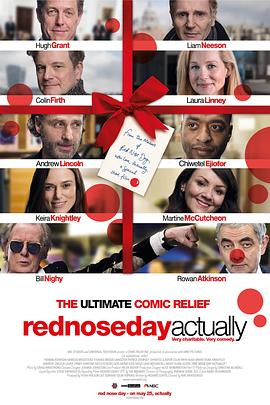

真爱至上：红鼻子日特别集 / Red Nose Day Actually
又名：《真爱至上》续集短片 / 真爱至上2 / Love Actually 2
作品信息
| 导演 | 理查德·柯蒂斯 / 马特·怀克洛斯 |
| 编剧 | 理查德·柯蒂斯 |
| 主演 | 科林·费尔斯 / 凯拉·奈特莉 / 安德鲁·林肯 / 连姆·尼森 / 休·格兰特 / 罗温·艾金森 / 比尔·奈伊 / 切瓦特·埃加福 / 托马斯·布罗迪-桑斯特 / 奥利维亚·奥尔森 / 玛汀·麦古基安 / 露西娅·莫尼斯 / 马库斯·布里斯托克 / 查利·斯迭特 / 凯特·莫斯 / 劳拉·琳妮 |
| 类型 | 喜剧 / 爱情 / 短片 |
| 制片国家/地区 | 英国 |
| 语言 | 英语 / 葡萄牙语 |
| 上映日期 | 2017-03-24(英国) / 2017-05-25(美国) |
| 片长 | 15分钟(英国) / 17分钟(美国) |
| IMDb | tt6582384 |
最后一次看到是 2026-08-12T21:11:36+08:00 · 豆瓣原页